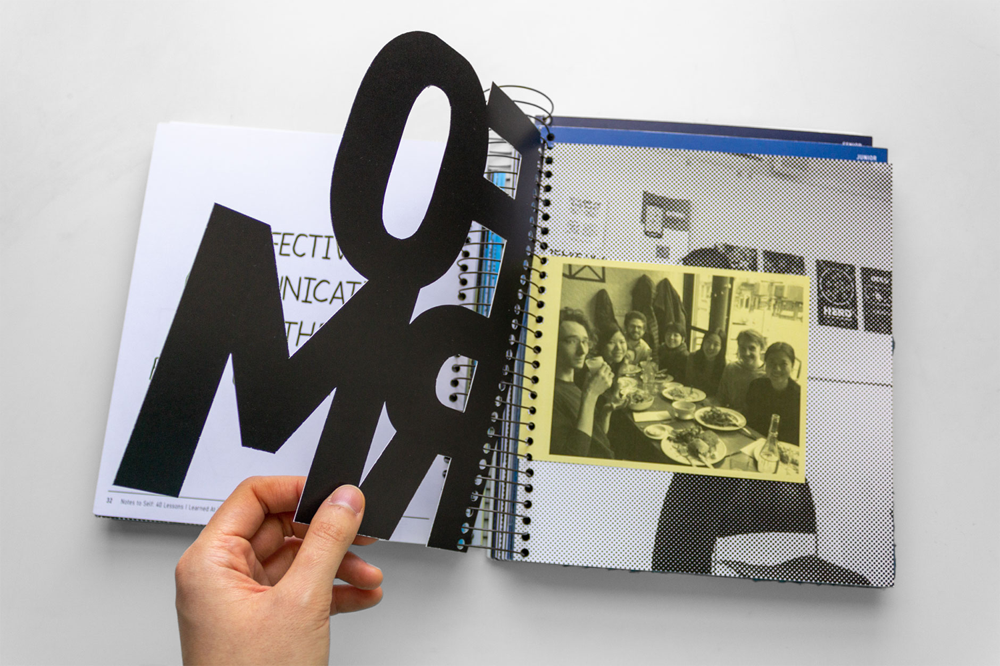
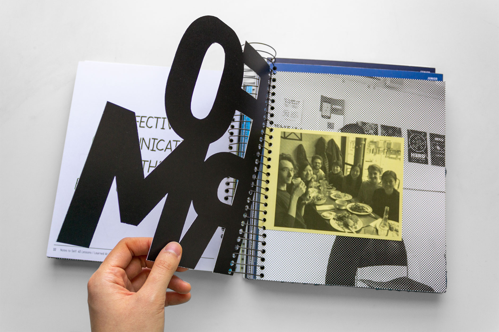

Notes to Self
Notes to Self: 40 Lessons I Learned at Yale is an interactive book I designed around a list of lessons I learned in college. The content of the lessons are reflected in the form they take on the pages. The overall design of the book alludes to notetaking and journaling: it is the size of a composition notebook, spiral bound, and contains my handwriting. Yellow inserts provide additional context.
The book is divided into four sections, one for every year. The pale blue of the first section reflects my unformed state as a first-year. The color darkens with each section until it becomes Yale’s signature blue, representing the person I had become my senior year. Different page proportions reflect each year’s uniqueness, yet there is still continuity as the sections and years build on one another.